個人雲端硬碟 · iPhone / iPad / Mac
你的檔案，
就在你自己的桶裡
孤雲是一款連接你自己物件儲存的檔案管理器——阿里雲 OSS、騰訊雲 COS、Cloudflare R2、 Backblaze B2、MinIO，或任何 S3 相容服務。桶是你的、金鑰是你的、帳單也是你自己的： 沒有帳號體系，沒有我們的伺服器，也沒有遙測，檔案從這台裝置直達你自己的桶。
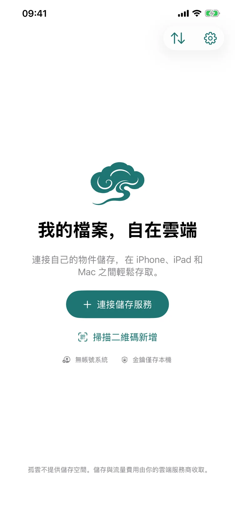
網盤把檔案放在別人的伺服器上，孤雲不是
多數網盤替你做決定：空間多大、速度多少、什麼時候漲價。孤雲的桶在你自己的雲端帳號名下，所以這些決定也歸你。
| 傳統網盤 | 孤雲 | |
|---|---|---|
| 空間 | 由廠商定價，依方案購買 | 你的桶，依服務商牌價，隨時能擴 |
| 速度 | 與會員等級綁定 | 只取決於你的桶與網路，沒有人為限速 |
| 費用 | 訂閱制，漲價由廠商決定 | App 免費；儲存與流量依服務商帳單，我們不抽成 |
| 服務終止 | 服務關閉，檔案跟著消失 | 桶還在，換個工具照樣能讀 |
| 搬家 | 匯出限速、格式受限 | 檔案本來就是標準物件儲存，誰都能讀 |
它能做什麼
日常要用的都在：瀏覽、傳輸、預覽、垃圾桶。沒有社群，沒有推薦，也沒有「猜你喜歡」。
瀏覽與管理
格狀與列表兩種檢視，依名稱、修改日期或大小排序；新增資料夾、重新命名、複製與搬移。
全桶搜尋
搜整個桶，而不只是你正待著的那個資料夾。
上傳與下載
從「檔案」或「照片」上傳，也可以整個資料夾一起傳；佇列可以暫停與繼續，下載可以存到資料夾或「照片」。
iOS 背景傳輸
200 MB 以內的檔案一次交給系統，切換 App 或鎖屏都會繼續完成；更大的檔案依系統給的背景時間繼續傳。
進度隨處可見
任何畫面角落有個小膠囊：有幾個任務在跑、傳到哪裡了、有沒有事等你處理，點它進傳輸頁。
用量統計
今天、本月、上月傳了多少，可依桶與依裝置分開看；行動網路單獨統計，只留在這台裝置上。
儲存總量
讓某個桶被統計一次，App 給出檔案數與合計大小；大桶可以分幾次點完，結果只留在這台裝置上。
封存檔案
封存與冷封存檔案會被標出；讀取前先問是否要解凍——耗時多久、誰計費、能不能取消，都寫在對話框裡。
預覽
圖片可縮放，影片邊下邊播，PDF 與文字直接開啟，不留下傳輸記錄。
垃圾桶
刪除會移進桶自己的垃圾桶目錄，那裡可以還原或徹底刪除，徹底刪除必須先確認。
多台裝置
同一個桶在 iPhone、iPad 與 Mac 上都能用；設定可以掃碼交給另一台裝置，不必手打金鑰。
鎖定
整體或單一儲存用面容 / 指紋解鎖；鎖著時傳輸照常繼續，關閉鎖定一定先要求一次裝置驗證。
介面
三個平台同一套設計，畫面取自 App Store 上的產品頁。點開任一張可以放大。
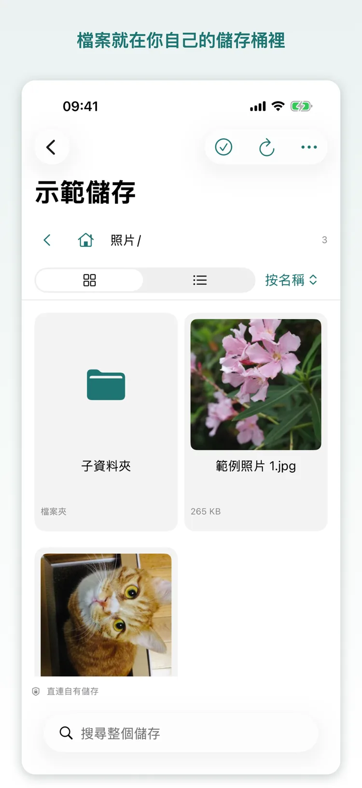
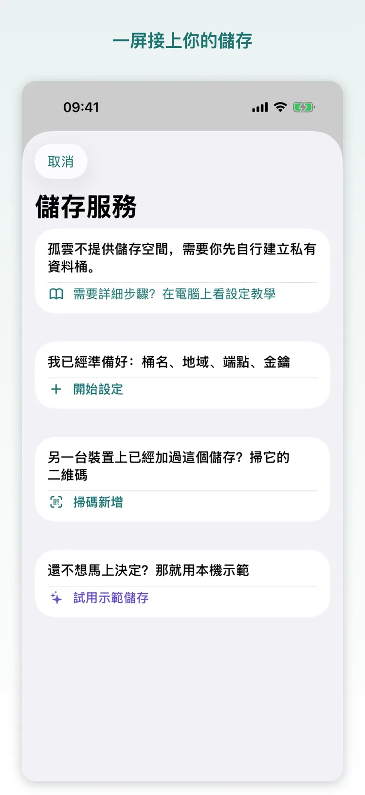
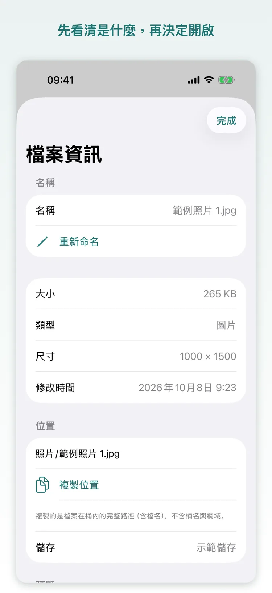
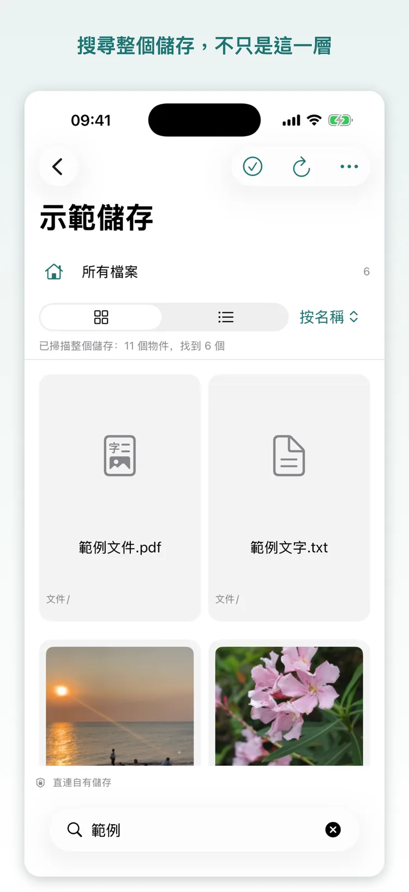
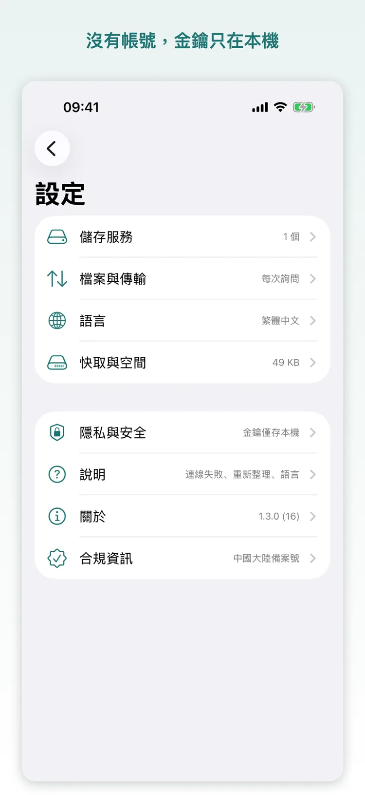
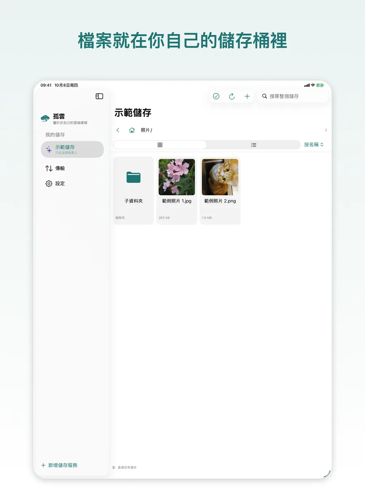
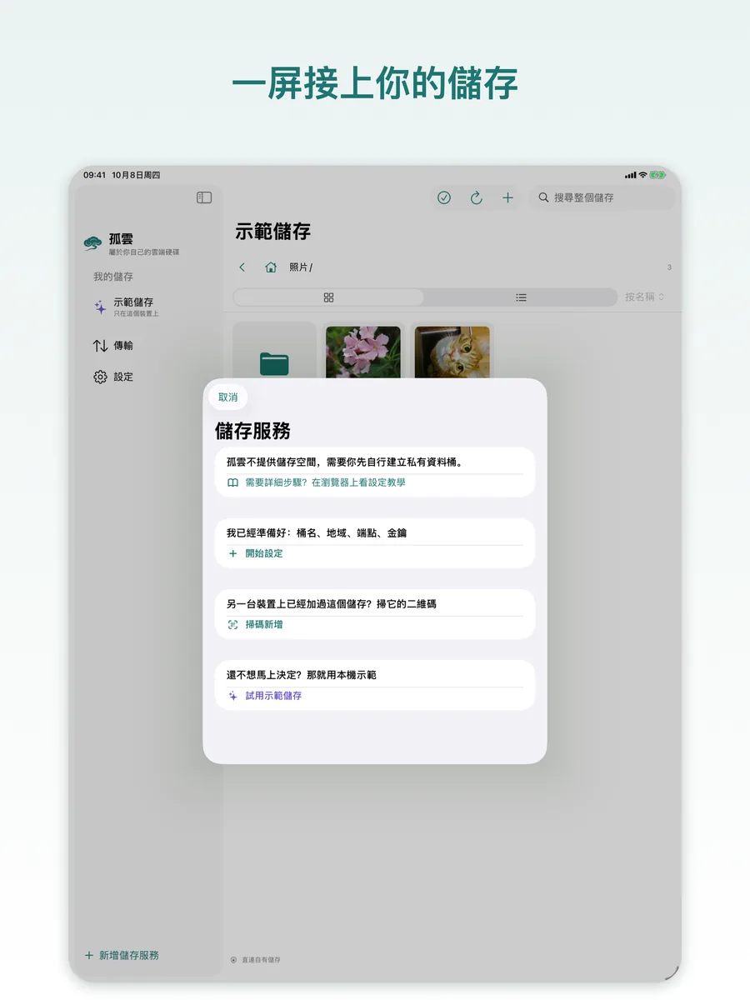
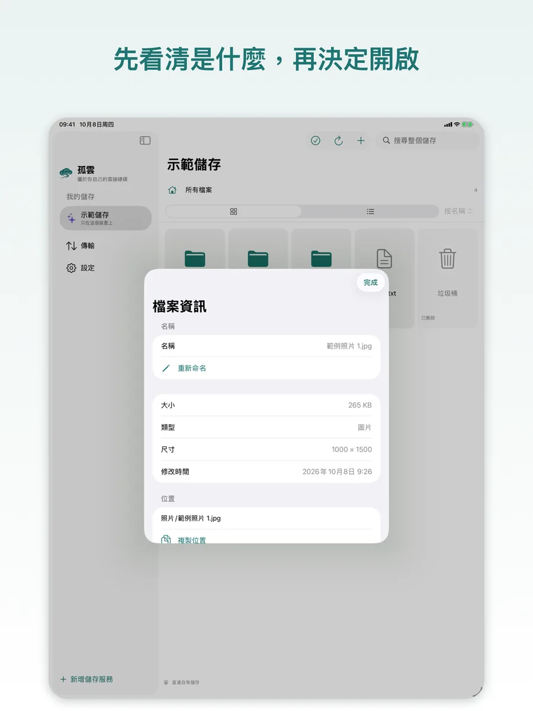
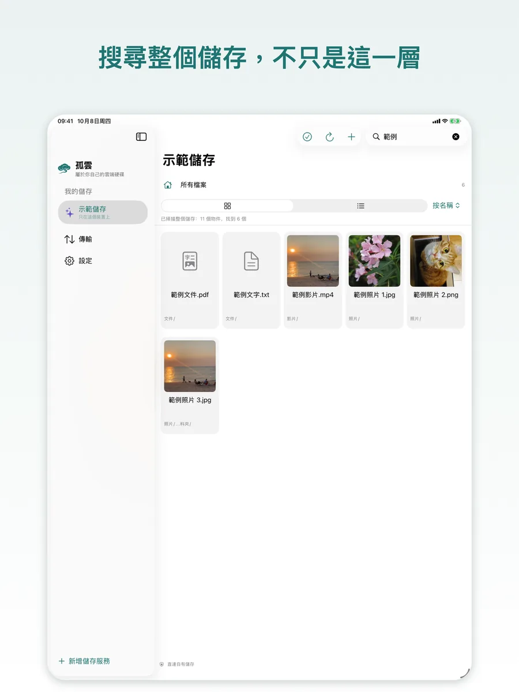
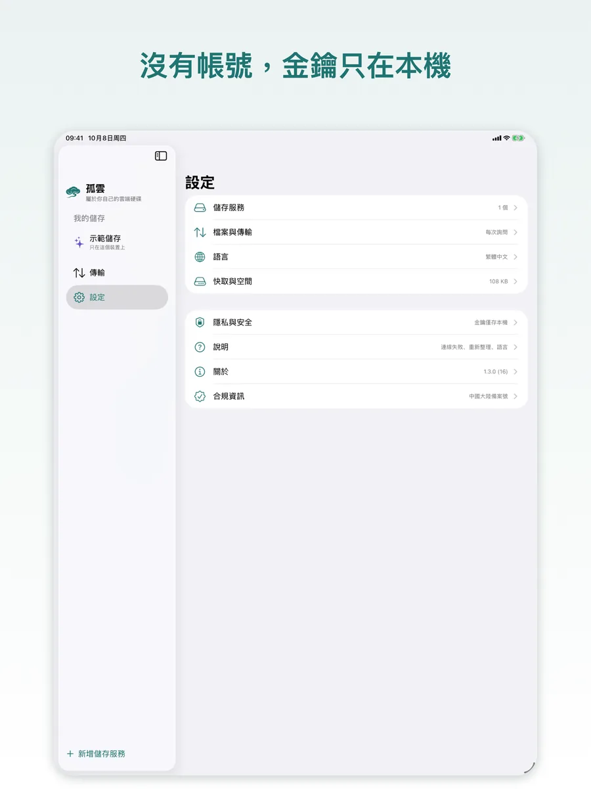
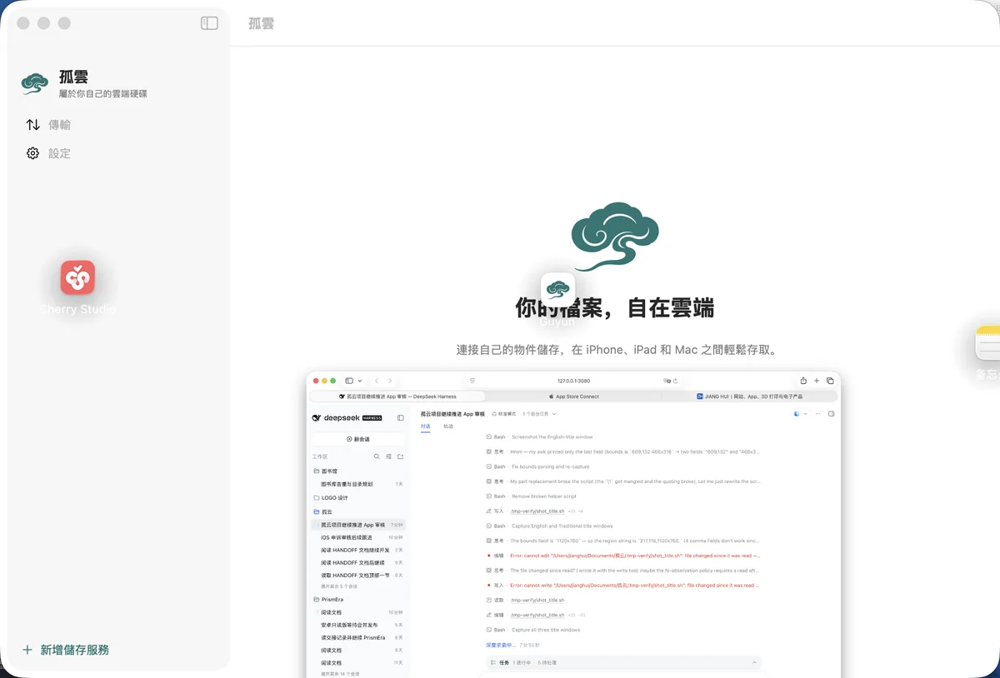
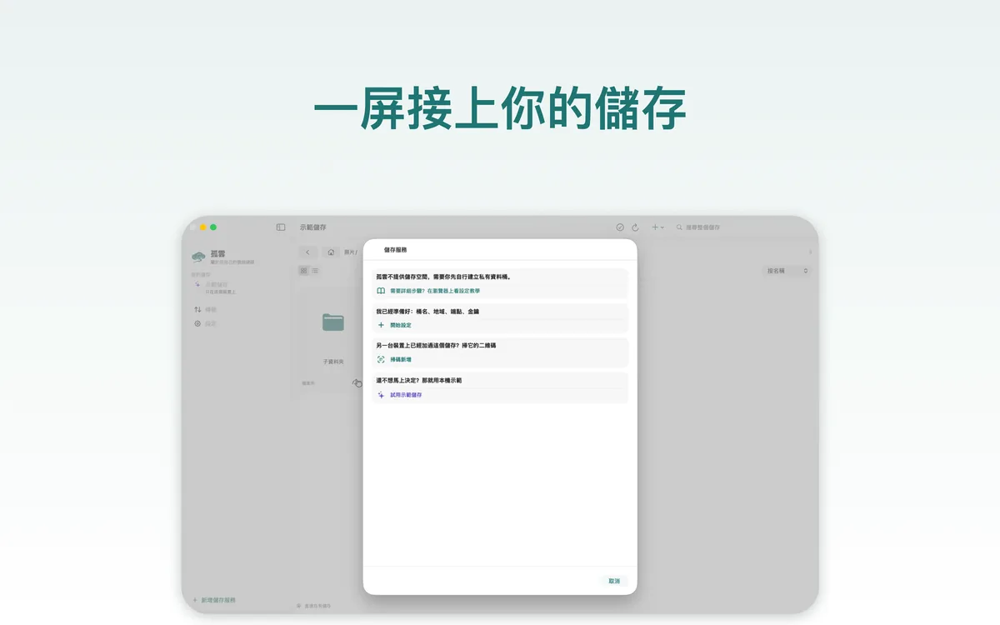
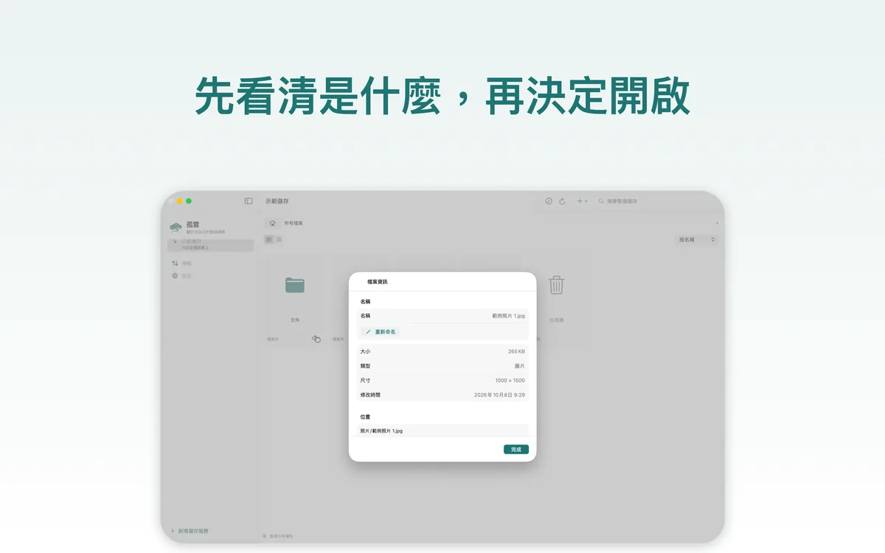
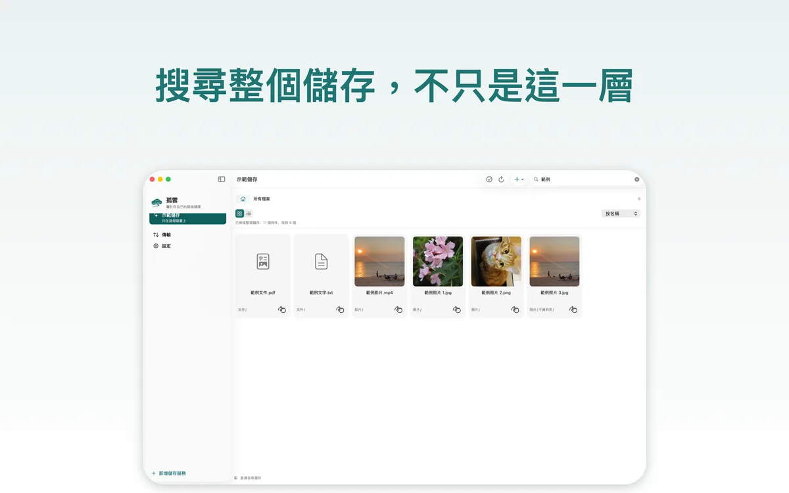
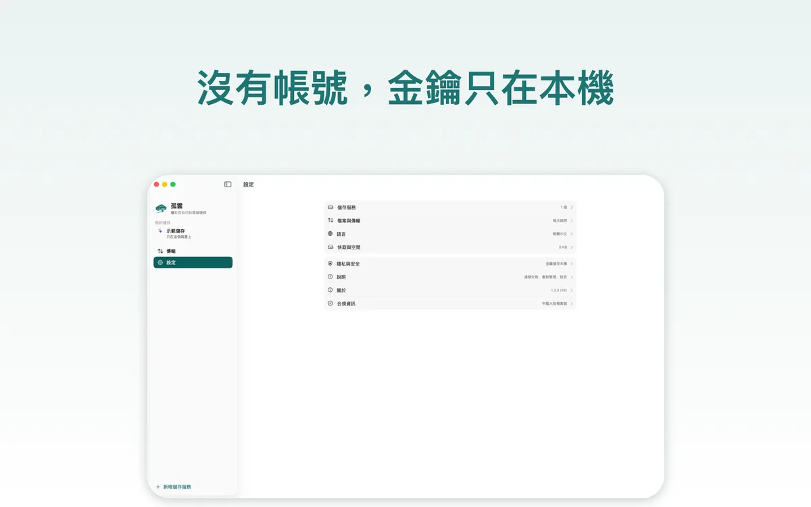
收費：App 免費，只有桶要錢
孤雲不提供儲存空間，也不從你的儲存裡抽成。你付給雲端服務商的那筆錢，就是全部成本。
| 情境 | 存多少 | 每月下行 | 中國區參考月費 |
|---|---|---|---|
| 輕量 | 50 GB | 10 GB | 約 8–11 元 |
| 主力 | 200 GB | 50 GB | 約 36–51 元 |
| 大庫 | 1 TB | 100 GB | 約 141–182 元 |
| 冷存 | 2 TB 封存 | 5 GB 取回 | 約 62–68 元 |
依 2026 年 10 月各家官方牌價估算，未含請求費；封存類另有最短存放期與取回費。 價格隨時會變，下單前請以服務商官網為準。
先算一筆，再決定
同一份「存 200 GB、每月讀 50 GB」的用法，在國內幾家之間能差出十幾元，海外幾家更是差出幾倍。 關鍵不在儲存單價，而在下行流量怎麼算。
我們做了一份比價：19 家物件儲存的儲存價、出網價、最低消費與免費額度，以及四個情境的月成本。
打開費用試算工具 ↗開始使用
你需要準備的只有兩樣：一個桶，和一對只授權這個桶的金鑰。
建一個私有桶
在服務商控制台新建一個桶並設為私有。為孤雲單獨建一組只授權該桶的存取金鑰，不要用主帳號的金鑰。
選服務與地點
在 App 裡選服務商和區域，Endpoint 與區域會自動填好。你只需填桶名和金鑰——騰訊雲 COS 還要填桶名結尾的 APPID。
連上就開始用
連線測試只列出根目錄，成功後金鑰存進這台裝置的 Keychain。之後瀏覽、上傳、預覽都和在本地一樣直接。
還沒有桶？先用示範儲存走一遍
內建的示範儲存在本機產生示範照片、一段影片和一份 PDF：不用帳號、不用金鑰、不連網， 瀏覽、預覽、上傳、重新命名、複製、搬移、刪除與還原都能試。隨時可以移除，不留下任何東西。
| 平台 | iPhone / iPad / Mac，同一份 App 涵蓋三個平台 |
|---|---|
| 系統 | iOS 17 / iPadOS 17 / macOS 14 以上 |
| 儲存服務 | 阿里雲 OSS、騰訊雲 COS、七牛、又拍雲、Backblaze B2、Cloudflare R2、MinIO，以及任何 S3 相容服務 |
| 介面語言 | 繁體中文、简体中文、English（在設定裡切換，下次開啟 App 生效） |
| 價格 | 免費。儲存與外網流量由你的雲端服務商依其牌價計費 |
| 名字 | 孤雲，取自李白《獨坐敬亭山》：「眾鳥高飛盡，孤雲獨去閒」 |
隱私，直說
沒有帳號，也沒有我們的伺服器——所以能收集你的東西，一樣都沒有。
- 只連你填的位址。App 與你的儲存通訊，別的什麼都不連；沒有中轉伺服器，也沒有遙測。
- 金鑰只在本機。存取金鑰存在這台裝置的 Keychain 裡，不上傳、不隨設定匯出，也不經 iCloud 同步。
- 交接碼裡是明文金鑰。只有你主動把儲存交給另一台裝置時，金鑰才會離開本機——把它當密碼，只給自己的裝置掃。
- 不蒐集使用資料。沒有第三方 SDK，沒有分析，沒有廣告，也沒有「匿名統計」。
- 面容 / 指紋由系統處理。這些資料不會離開你的裝置，App 只拿到「通過」或「不通過」。
- 鎖是介面門，不是加密。它擋的是別人拿起你這台已解鎖的裝置；檔案本身仍依你桶的權限存放。
常見問題
我需要自己有雲端儲存嗎？
是。孤雲不提供儲存空間：你要有一個物件儲存桶，以及一對只授權這個桶的存取金鑰。支援阿里雲 OSS、騰訊雲 COS、七牛、又拍雲、Backblaze B2、Cloudflare R2、MinIO，以及任何 S3 相容服務。
還沒有的話，先用內建的示範儲存把整個 App 走一遍，不需要帳號、金鑰或網路。
App 真的免費嗎？
是。沒有訂閱、沒有內購、沒有功能鎖，也不從你的儲存費用裡抽成。你要付的只有雲端服務商那筆帳單——儲存與外網流量，依它公布的牌價。
阿里雲中國內地的桶為什麼連不上？
這不是孤雲的限制。2025-03-20 起新開通 OSS 的帳號，用預設外網網域存取內地地域的桶，資料類介面（含上傳、下載）一律被拒，回傳 PublicEndpointForbidden；私有桶、不对外提供連結也不例外，判斷依據是 OSS 開通時間而不是建桶時間。
要留在內地地域，就給桶綁定一個已備案的自訂網域，並把它填在 Endpoint 裡；或者改用香港 / 海外地域的桶，也可以用 MinIO 自建。
我的檔案會經過你們的伺服器嗎？
不會。沒有帳號體系，也沒有我們的伺服器：App 只與你填寫的儲存位址通訊，檔案從這台裝置直達你自己的桶。
金鑰安全嗎？
存取金鑰只存在這台裝置的 Keychain 裡，不上傳、不隨設定匯出、也不經 iCloud 同步。
唯一的例外是你主動交接：把儲存交給另一台裝置時，交接碼裡就是明文金鑰，60 秒後失效、只能被領取一次、可隨時取消。只給自己的裝置掃，若可能被看到就到服務商處輪換金鑰。
換手機或重裝後要重新填金鑰嗎？
要。金鑰不隨 iCloud 同步，這也是它不離開本機的代價。換裝置時可以用「掃碼新增」從舊裝置把整份設定帶過去，60 秒內有效；也可以重新填一次。
多台裝置之間會自動同步嗎？
不會。孤雲不是同步工具，也不是自動備份工具：它不會自己在背景啟動傳輸，每一次上傳與下載都由你發起、並且能看見結果。
同一個桶可以在 iPhone、iPad 與 Mac 上同時連接，任一台寫入的變更，在別處重新整理一下就能看到。
刪除的檔案去哪了？
進桶自己的垃圾桶目錄，可以還原或徹底刪除；徹底刪除必須二次確認。
垃圾桶就在你的桶裡，所以它佔的儲存空間和你其他檔案一樣計費——清空它，帳單才會降下來。